<Inputs />
User Interface of 3 Applications
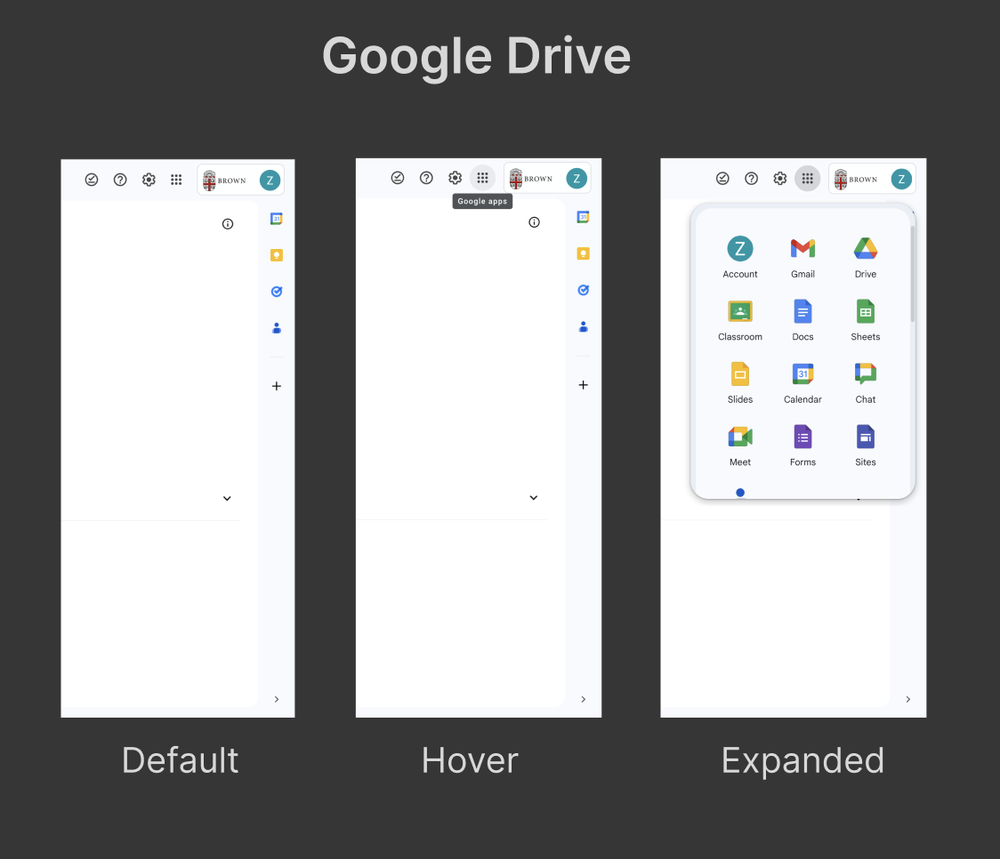
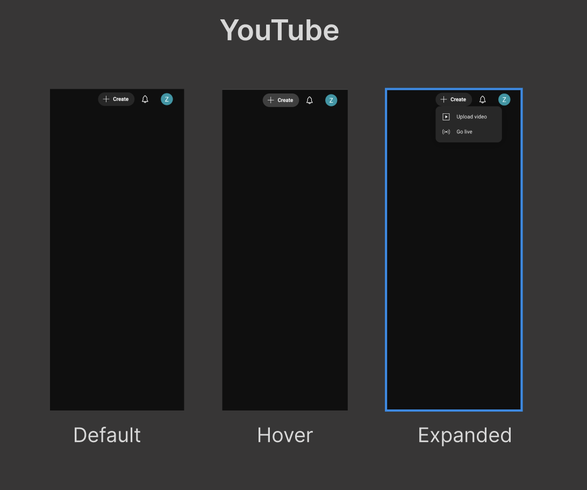
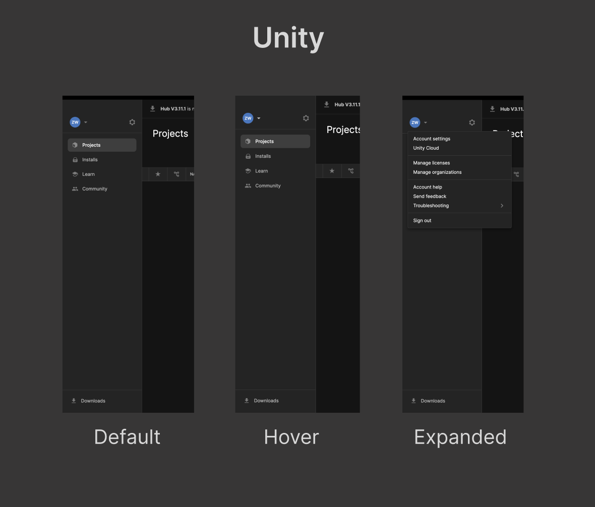
Reflection Questions
In each application, hover/focus states highlight interactivity. Google Drive includes tooltips while others do not.
Supports hover, click, keyboard nav, Esc key to close, but lacks drag-and-drop, partial text selection, and input.
Hover cues, consistent layout, and simple interactions make it easy to learn, remember, and use efficiently.
Comparing component across 3 applications (input accessibility)
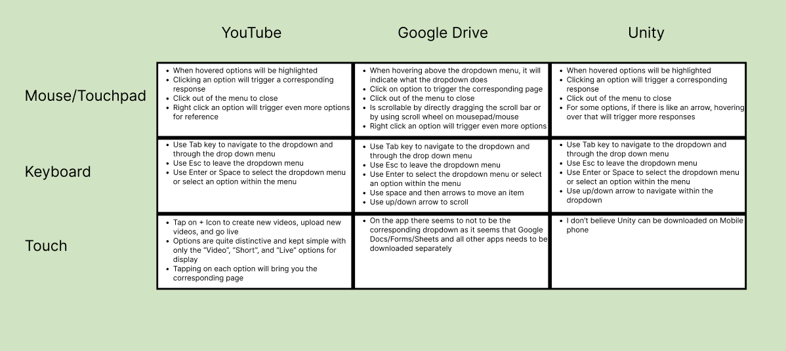<Outputs />
Output Differences Cues for Changing State
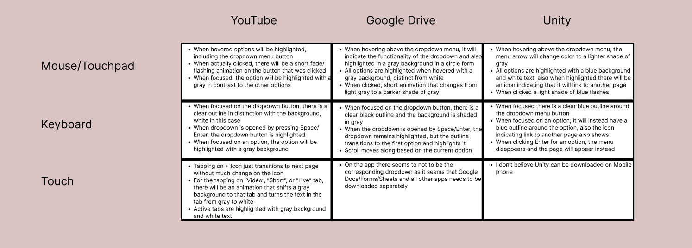Focus Order
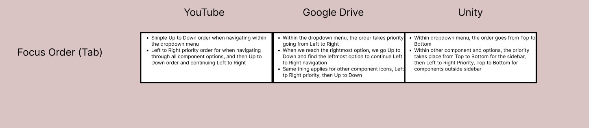Screen Reader
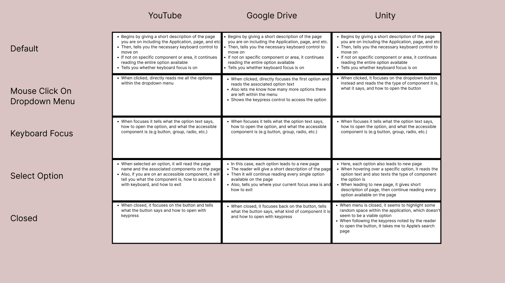<State Models />
Component Design (Mouse) Before VS After
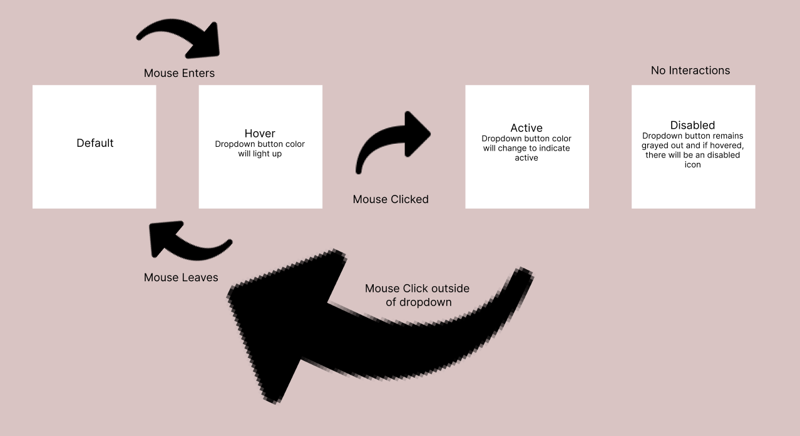
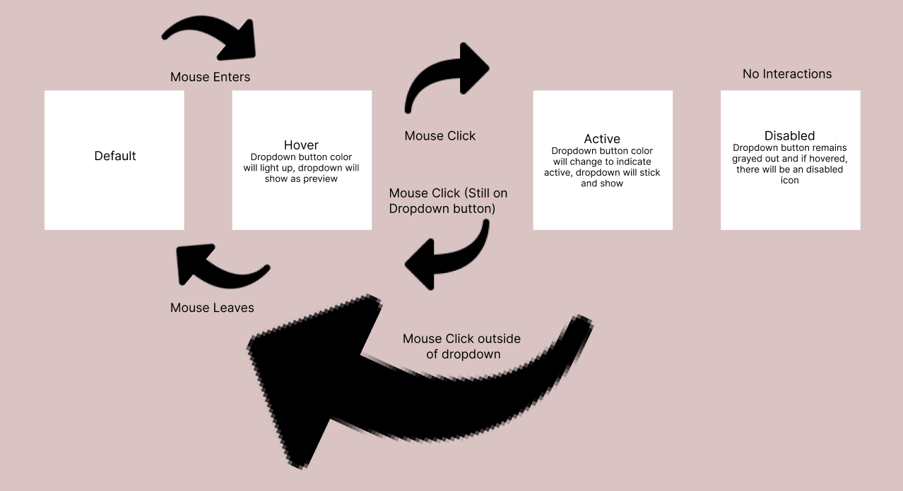
Component Design (Keyboard) Before VS After
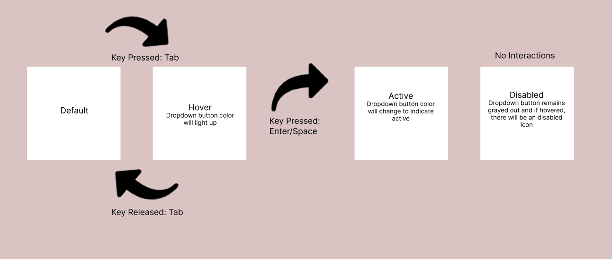

Unity Redesign: Initial vs Hover
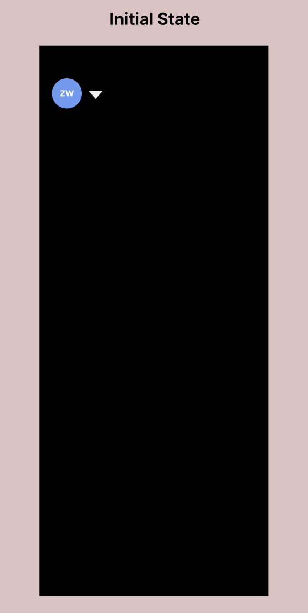
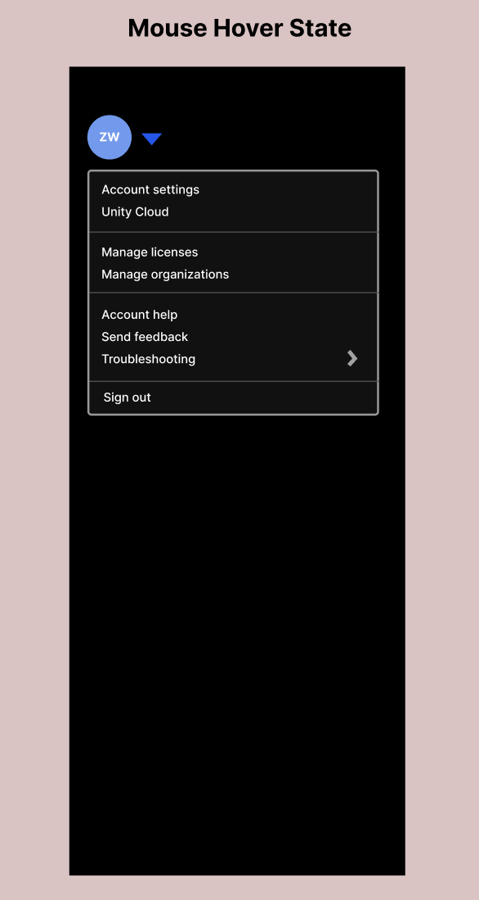
Larger hover areas and clear visual cues aid learnability.
Consistent behaviors with animations improve recall.
Sticky dropdowns and larger targets reduce clicks and errors.
High contrast, larger icons, and sticky UI improve accessibility.
<Reflections />
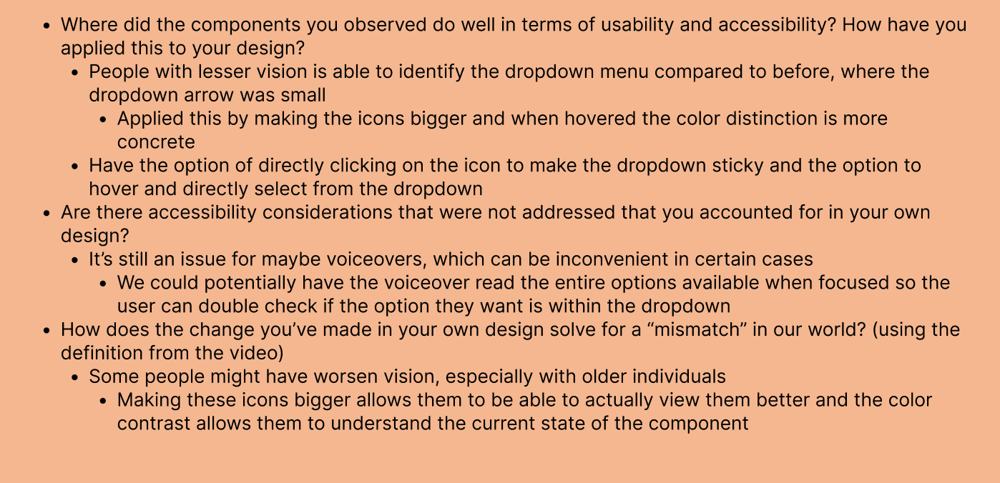
<Revised Component />
ZW
▾